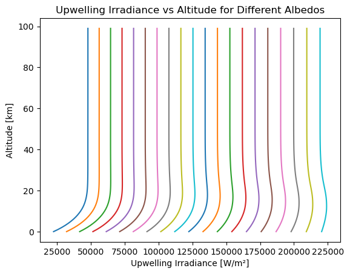
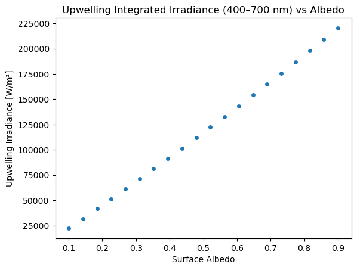

Quickstart: Surface Albedo#
In this notebook, we’ll run our first pyRadtran simulation — computing broadband irradiance for a range of surface albedo values. This demonstrates the basic workflow: create an input dataset, configure the simulation, run it, and visualize the results.
What We’ll Learn#
How to build a basic simulation configuration
How to create an input xarray
Datasetwith varying parametersHow to run a simulation and inspect the results
How to produce quick visualizations with xarray and matplotlib
This is a minimal configuration — just enough to run a simulation. We’ll build on this in later notebooks.
import pyradtran # Registers the .pyradtran xarray accessor
from pyradtran import Var
from pyradtran import load_config
import matplotlib.pyplot as plt
import numpy as np
import xarray as xr
import pandas as pd
from pathlib import Path
import logging
# Suppress verbose solver output (change to DEBUG to see details)
logging.getLogger('pyradtran').setLevel(logging.CRITICAL)
# ── Simulation parameters ─────────────────────────────────────────────────────
# Start from merged defaults + master config (~/.pyradtran/config.yaml)
cfg = load_config()
# Spectral range and solver
cfg.simulation_defaults.wavelength_nm = [400, 700] # broadband visible
cfg.simulation_defaults.rte_solver = "disort"
cfg.simulation_defaults.mol_abs_param = "lowtran per_nm"
cfg.simulation_defaults.source = "solar"
cfg.simulation_defaults.integrate_wavelength = True
# Output
cfg.simulation_defaults.output_altitudes_km = [0.0]
cfg.simulation_defaults.output_columns = ["zout", "lambda", "sza", "edir", "eglo", "edn", "eup", "enet", "albedo"]
# Execution
cfg.execution.max_workers = 1
cfg.execution.cleanup_temp_files = False
# Save so the run is reproducible
config_path = Path("config/albedo.yaml")
cfg.to_yaml(config_path)
print(f"Config saved to {config_path}")
# ── Input dataset ─────────────────────────────────────────────────────────────
# Single time step at Leipzig, Germany
# 100 altitude levels from 0 to 99 km
# 20 different albedo values as a sweep dimension
N_albedo = 20
albedo_values = np.linspace(0.1, 0.9, N_albedo)
ds = xr.Dataset(
coords={
'time': [pd.to_datetime('2025-04-04T08:00:00')],
'latitude': ('time', [51.34]),
'longitude': ('time', [12.37]),
'altitude': ('altitude', np.arange(0, 100, 1)),
},
data_vars={
'albedo': ('albedo_dim', albedo_values),
}
)
# ── Run ───────────────────────────────────────────────────────────────────────
ds_sim = ds.pyradtran.run(
config_path=config_path,
params={'albedo': Var('albedo')}, # Map the 'albedo' variable to the libRadtran albedo parameter
show_progress=False,
)
print("Simulation complete!")
print(f"Variables: {list(ds_sim.data_vars.keys())}")
print(f"Dimensions: {dict(ds_sim.dims)}")
2026-07-18 23:59:10,357 - pyradtran.config - INFO - Configuration written to config/albedo.yaml
Config saved to config/albedo.yaml
Simulation complete!
Variables: ['sza', 'edir', 'eglo', 'edn', 'eup', 'enet', 'albedo', 'status']
Dimensions: {'albedo_dim': 20, 'time': 1, 'altitude': 100}
/tmp/ipykernel_22011/1610405201.py:66: FutureWarning: The return type of `Dataset.dims` will be changed to return a set of dimension names in future, in order to be more consistent with `DataArray.dims`. To access a mapping from dimension names to lengths, please use `Dataset.sizes`.
print(f"Dimensions: {dict(ds_sim.dims)}")
ds_sim
<xarray.Dataset> Size: 113kB
Dimensions: (albedo_dim: 20, time: 1, altitude: 100)
Coordinates:
* albedo_dim (albedo_dim) int64 160B 0 1 2 3 4 5 6 7 ... 13 14 15 16 17 18 19
* time (time) datetime64[ns] 8B 2025-04-04T08:00:00
* altitude (altitude) float64 800B 0.0 1.0 2.0 3.0 ... 96.0 97.0 98.0 99.0
Data variables:
sza (altitude, albedo_dim, time) float64 16kB 60.65 60.65 ... 60.65
edir (altitude, albedo_dim, time) float64 16kB 1.944e+05 ... 2.62e+05
eglo (altitude, albedo_dim, time) float64 16kB 2.248e+05 ... 2.62e+05
edn (altitude, albedo_dim, time) float64 16kB 3.042e+04 ... 0.0263
eup (altitude, albedo_dim, time) float64 16kB 2.248e+04 ... 2.193...
enet (altitude, albedo_dim, time) float64 16kB 2.023e+05 ... 4.269...
albedo (altitude, albedo_dim, time) float64 16kB 0.1 0.1421 ... 0.837
status (albedo_dim, time) int64 160B 0 0 0 0 0 0 0 0 ... 0 0 0 0 0 0 0
Attributes: (12/26)
generated_by: pyradtran
generation_date: 2026-07-18T23:59:22.000865
pyradtran_version: 0.2.0
history: 2026-07-18T23:59:22: pyradtran 0.2.0 ds.py...
pyradtran_params: {"albedo": "Var(name='albedo')"}
pyradtran_libradtran_bin: /opt/libRadtran-2.0.6/bin/uvspec
... ...
config_integrate_wavelength: 1
config_output_altitudes_km: [0.0, 1.0, 2.0, 3.0, 4.0, 5.0, 6.0, 7.0, 8...
config_libradtran_bin: /opt/libRadtran-2.0.6/bin/uvspec
config_libradtran_data: /opt/libRadtran-2.0.6/data
config_max_workers: 1
config_timeout_seconds: 300Results: Altitude Profiles#
Let’s visualize how the upwelling irradiance varies with altitude for different albedo values:
ds_sim.eup.squeeze().plot(hue='albedo_dim', y='altitude', add_legend=False)
plt.xlabel('Upwelling Irradiance [W/m²]')
plt.ylabel('Altitude [km]')
plt.title('Upwelling Irradiance vs Altitude for Different Albedos')
plt.show()

Results: Albedo Dependence#
Now let’s look at how the surface-level upwelling irradiance depends on albedo. As expected, higher surface albedo leads to more reflected (upwelling) radiation:
ds_sim.sel(altitude=0).plot.scatter(x='albedo', y='eup')
plt.title('Upwelling Integrated Irradiance (400–700 nm) vs Albedo')
plt.xlabel('Surface Albedo')
plt.ylabel('Upwelling Irradiance [W/m²]')
plt.show()
